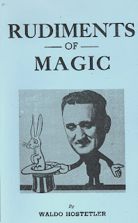

"It's in the genes"
4/14/2011
{kind=link}

{kind=link}
Maybe we're all visual learners, but I know I am. As a child, many of the lessons that impacted my life and are remembered to this day, are those that involved visuals, at home, in school, and at church. I well remember one series of revival meetings held at our country church where the preacher would use some sort of object lesson in each of his sermons. Object lessons that always had a surprising and amazing conclusion. I never heard them referred to as "magical", although when seen through my very young eyes, they were nothing less.
My parents yielded to my pleas to be allowed to sit in the front pews for each evening meeting. I didn't want to miss anything. And I would plead with the preacher after service until he gave me some tips on how his seemingly impossible lessons were achieved.
I do not know the name of the preacher who made lifetime impressions on me through both word and visual lessons. But I believe it was one of two men. Either Mennonite Bishop S. G. Shetler who was also a teacher and school principal. As a mentor of teachers, he taught teaching techniques, also using visual, sometime "magical" object lessons.
One of Bishop Shetler's students was my ancestor, Waldo Hostetler, who himself went on to become a teacher who used "magical" lessons to reinforce his teachings. My mother was a Hostetler, and two of mother's younger brothers learned some magical tricks from Waldo. (Exactly how Waldo was related to my grandfather, I do not know.) It was while yet in grade school that I was inspired and taught several magic tricks from my uncles. But there in my heritage the threads of destiny can be clearly seen, as it was my own use of magic lessons to teach that eventually led me to take up ventriloquism.
In 1946 Waldo Hostetler wrote a simple little 24 page book, Rudiments of Magic, in which he explained how and why he took up the art of magic. And he includes ten magical effects with the secrets for preparation and presentation. No lessons applications are included - only his thoughts on the value of using magical visuals, which seems to be his primary motivation for writing the book. I am so thankful he did so. If not, rather than writing this blog post I would likely be on my way out to the barn to milk the cows! (Both of my uncles who taught me magical tricks were dairy farmers. I learned to milk cows as a youngster, too, but trust me, magic and ventriloquism are more fun!)
I have five copies of Rudiments of Magic. One I am awarding via today's prize drawing to Brian Zimmerman. The other four I am offering for sale: $10.00 each PP.